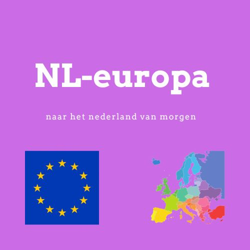
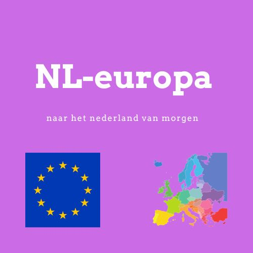

NL-Europa
Naar het Nederland van morgen
Politici
 


NL-Europa functioneert natuurlijk niet zonder de vele mensen die er dag en nacht aan werken om onze visie realiteit te maken. Ik wil u onze talenten introduceren, zowel landelijk als lokaal. Op lokaal vlak hebben wij Victor Brand en Dhr. Frank Visser op de lijst gezet. En waarom hoor ik u vragen? Deze twee heren hebben met eigen ogen gezien hoe het in Nederland eraan toegaat. Ze zijn de wijken van Nederland ingegaan om mensen te helpen met het plaatsen van hun tuinhekjes, 5 mm van de erfgrens, burenruzies op te lossen en weten wat de echte problemen van de Nederlander zijn. Ik vroeg deze twee heren of ze op de lijst wilden staan, en ze stonden te popelen om onze visie werkelijkheid te maken.

- Victor Brand en Meester Frank Visser, de mensen die lokaal het verschil gaan maken voor u.
- "Bekwame mensen met jarenlange ervaring met de gewone burger.
- Ze staan voor u klaar om u te helpen met uw problemen en onze visie werkelijkheid te maken.

NL-Europa heeft ook leiders voor de landelijke politiek om Nederland naar de toekomst te leiden. Ik presenteer u de lijsttrekker van NL-Europa, Julian Forrer.
- Verkozen tot lijsttrekker bij de vorige partij verkiezingen
- Een heldere visie voor Nederland